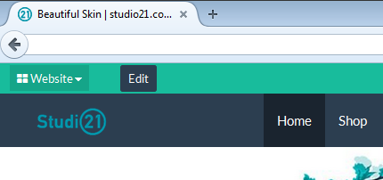
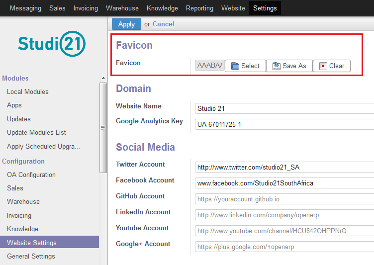

<section class="oe_container">
    <div class="oe_row oe_spaced">
        <div class="oe_span12">
            <h2 class="oe_slogan">Website Favicon</h2>
            <h3 class="oe_slogan">Choose your Odoo Website's favicon</h3>
        </div>
        <div class="oe_span12">
            <div class="oe_demo oe_picture oe_screenshot">
                    
            </div>
        </div>
        <div class="oe_span6">
            <div class="oe_demo oe_picture oe_screenshot">
                    
            </div>
        </div>
        <div class="oe_span6">
            <p class="oe_mt32">
An easy way to upload your favicon to Odoo using the existing Website Settings menu item.
            </p>
        </div>
    </div>
</section>